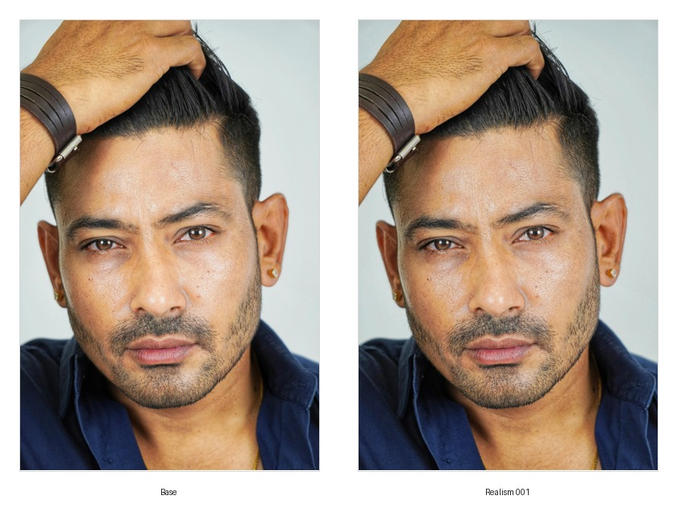
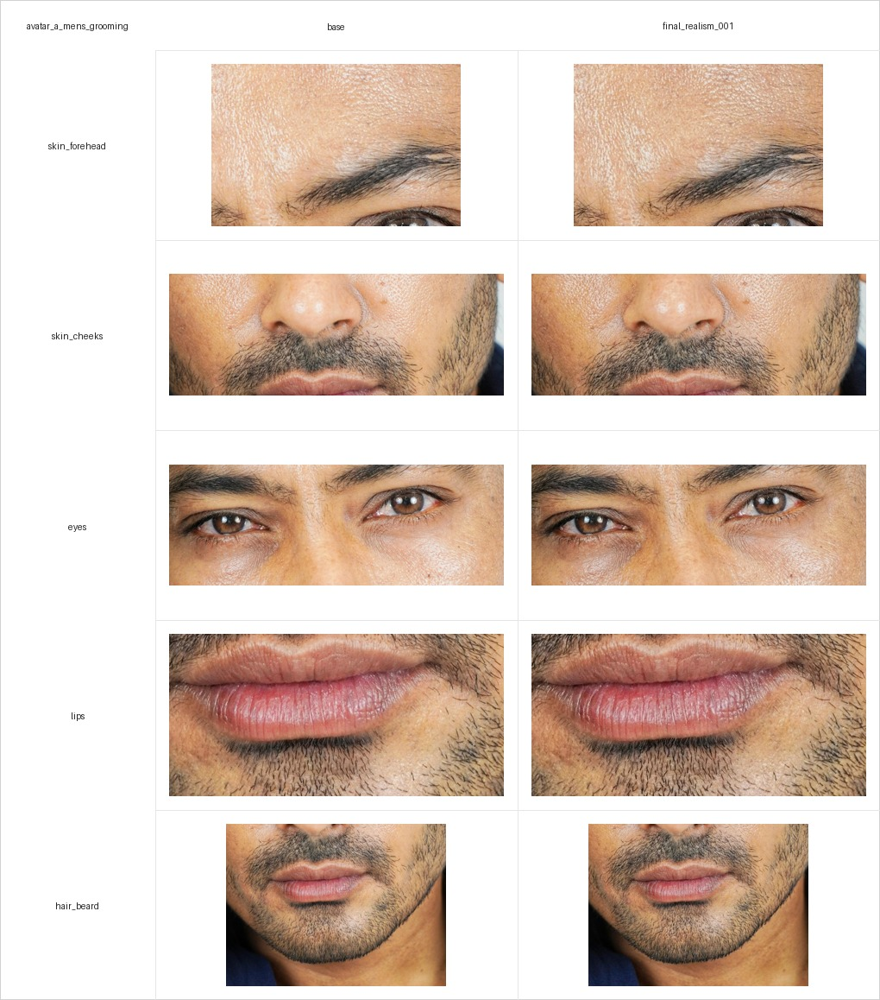
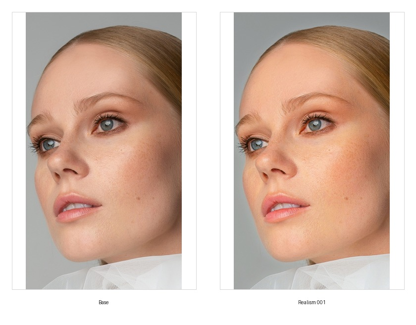
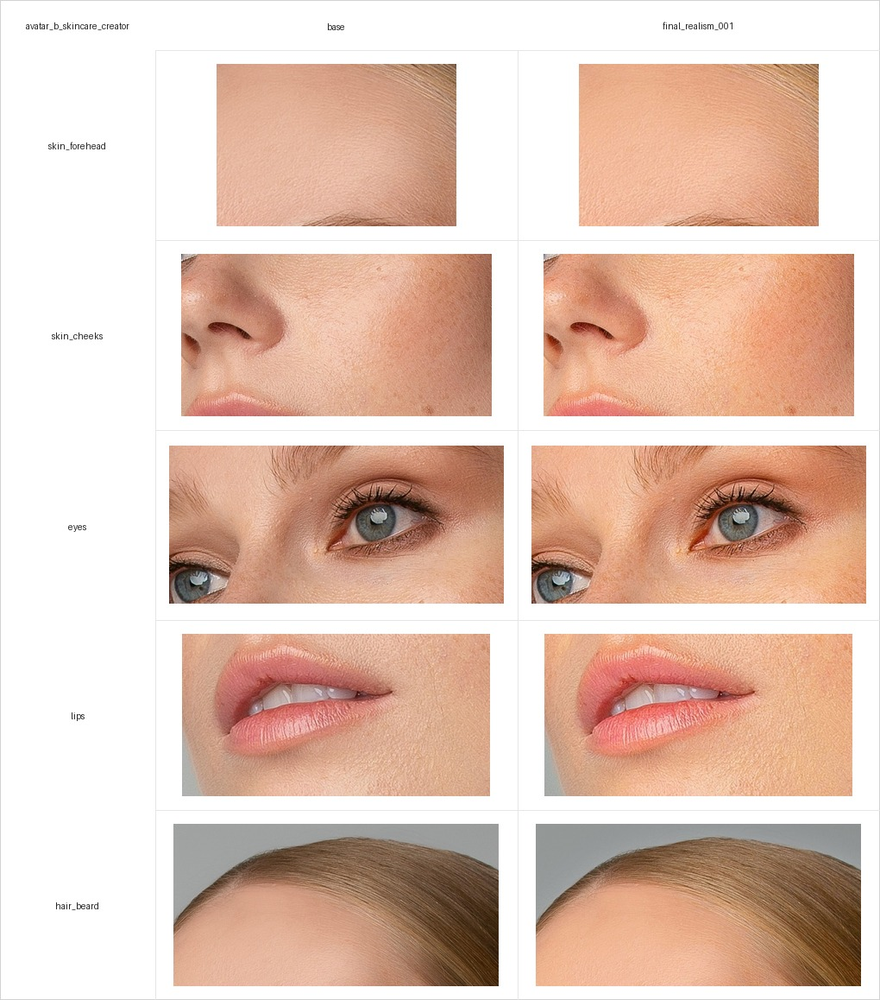

1. Цель
Проверить управляемый workflow улучшения реалистичности AI/UGC portrait still для men's grooming кейса: от source reference и base still до realism pass, crop-проверки, scoring и подготовки материалов для будущего image-to-video теста.
2. Почему этот кейс важен
Для UGC-style avatar content недостаточно получить визуально приятный portrait. Перед image-to-video важно отдельно проверить зоны, которые чаще всего ломают реализм:
- кожа;
- глаза;
- губы;
- волосы и борода;
- identity consistency.
Цель этого проекта — показать не только финальную картинку, но и контролируемый pipeline: source tracking, tool settings, crop comparison, scoring и limitations.
3. Целевая ниша
Первый рабочий трек:
- Avatar A: Men's Grooming Advisor
- Niche: men's grooming
- Use cases: face wash, beard care, moisturizer, shaving, fragrance/body care
Avatar B для skincare routine creator добавлен на уровне source/base, первого ON1 realism pass и user scoring.
4. Метод
Текущий pipeline:
- Source reference из Pexels.
- Base still в
03_base_avatars/. - Realism pass через ON1 Photo RAW 2025.
- Full image comparison grid.
- Crop extraction по зонам лица.
- Crop comparison grid.
- User visual scoring по шкале 1-5.
Avatar A и Avatar B уже прошли шаги до user visual scoring.
5. Источник изображения
Source reference:
- File:
02_source_data/public_references/pexels_unsplash/mens_grooming_pexels_001.jpg - Source: Pexels
- Source URL: https://www.pexels.com/ru-ru/photo/11772165/
- License note: Pexels license checked on 2026-05-20.
Pexels позволяет бесплатное использование и модификацию фото; attribution is not required but appreciated. Важное ограничение: нельзя использовать человека на фото так, будто он endorses продукт или бренд.
6. Avatar A: Men's Grooming Advisor
Character files:
01_character_briefs/avatar_a_mens_grooming/character_brief.md01_character_briefs/avatar_a_mens_grooming/character_profile.json01_character_briefs/avatar_a_mens_grooming/prompt_history.md
Base avatar:
03_base_avatars/avatar_a_mens_grooming/selected/base.jpg
Realism output:
04_realism_passes/avatar_a_mens_grooming/final_stills/final_realism_001.jpg
Tool:
- ON1 Photo RAW 2025
- Settings file:
09_workflows/on1/avatar_a_realism_001_on1_photo_raw_2025.onp - Readable settings summary:
09_workflows/on1/on1_realism_001_settings_summary.md
Key readable ON1 settings include Brilliance AI - Люди, increased structure/clarity, mild vibrance/color/tone adjustments, reduced highlights/whites and small exposure/contrast corrections.
7. Avatar B: Skincare Routine Creator
Character files:
01_character_briefs/avatar_b_skincare_creator/character_brief.md01_character_briefs/avatar_b_skincare_creator/character_profile.json01_character_briefs/avatar_b_skincare_creator/prompt_history.md
Source reference:
- File:
02_source_data/public_references/pexels_unsplash/skincare_creator_pexels_001.jpg - Source: Pexels
- Source URL: https://www.pexels.com/ru-ru/photo/4575002/
- License note: Pexels license checked on 2026-05-20.
Base avatar:
03_base_avatars/avatar_b_skincare_creator/selected/base.jpg
Current status:
- source/base stage complete;
- realism pass 001 complete;
- crop analysis complete;
- scoring complete.
Realism output:
04_realism_passes/avatar_b_skincare_creator/final_stills/final_realism_001.jpg
Tool:
- ON1 Photo RAW 2025
- Settings file:
09_workflows/on1/avatar_b_realism_001_on1_photo_raw_2025.onp - Readable settings summary:
09_workflows/on1/on1_avatar_b_realism_001_settings_summary.md
Key readable ON1 settings include Brilliance AI - Люди, increased exposure, reduced dehaze, noise reduction, enabled auto tone/color and reduced highlights/whites.
8. Visual comparison
Full image comparison:

Crop comparison:

Avatar B full image comparison:

Avatar B crop comparison:

Crop zones:
skin_foreheadskin_cheekseyeslipshair_beard
Crop manifests:
06_analysis/crops/avatar_a_mens_grooming/crop_manifest.csv06_analysis/crops/avatar_b_skincare_creator/crop_manifest.csv
9. Scoring
Avatar A
Scoring source: user visual review after crop correction.
| Metric | Score | Notes |
|---|---|---|
| skin_realism | 4 | Кожа стала достаточно хорошей для case draft. |
| eye_realism | 3 | Глаза приемлемы, но не strongest improvement area. |
| lips_realism | 4 | Губы оценены как хорошие для case draft. |
| hair_beard_realism | 3 | Борода приемлема, но требует дальнейшего улучшения. |
| identity_consistency | 5 | Личность сохранена очень хорошо. |
| overall_score | 4 | Realism pass принят для черновика кейса. |
CSV log:
04_realism_passes/realism_run_log.csv
Verdict:
realism_001 принят как accepted_for_case_draft.
Avatar B
Scoring source: user visual review after crop comparison.
| Metric | Score | Notes |
|---|---|---|
| skin_realism | 4 | Кожа оценена как хорошая для case draft. |
| eye_realism | 5 | Глаза — самая сильная зона текущего pass. |
| lips_realism | 4 | Губы оценены как хорошие для case draft. |
| hair_beard_realism | 4 | Для Avatar B это hair/hairline зона, колонка оставлена общей для CSV. |
| identity_consistency | 4 | Личность сохранена хорошо. |
| overall_score | 4 | Realism pass принят для черновика кейса. |
CSV log:
04_realism_passes/realism_run_log.csv
Verdict:
avatar_b_realism_001 принят как accepted_for_case_draft.
10. Color / tone statistics
Stats file:
06_analysis/lab_color_stats/avatar_a_mens_grooming_color_stats.csv06_analysis/lab_color_stats/avatar_b_skincare_creator_color_stats.csv
Краткое наблюдение: final_realism_001 стал немного темнее во всех crop-зонах, при этом saturation немного выросла почти везде.
| Zone | Luminance delta | Saturation delta | Chroma proxy delta |
|---|---|---|---|
| eyes | -0.0245 | +0.0136 | +0.0018 |
| hair_beard | -0.0088 | +0.0049 | +0.0001 |
| lips | -0.0137 | +0.0067 | -0.0026 |
| skin_cheeks | -0.0224 | +0.0124 | +0.0018 |
| skin_forehead | -0.0342 | +0.0175 | +0.0042 |
Ограничение: это RGB/HSV/luminance statistics, а не полноценный LAB analysis. Таблица показывает color/tone shift, но не заменяет visual scoring.
Для Avatar B final_realism_001 стал светлее и насыщеннее во всех crop-зонах.
| Zone | Luminance delta | Saturation delta | Chroma proxy delta |
|---|---|---|---|
| eyes | +0.0428 | +0.0421 | +0.0663 |
| hair_beard | +0.0315 | +0.0338 | +0.0513 |
| lips | +0.0284 | +0.0464 | +0.0644 |
| skin_cheeks | +0.0317 | +0.0479 | +0.0681 |
| skin_forehead | +0.0288 | +0.0493 | +0.0649 |
11. Что сработало
- Source image теперь отслеживается через
dataset_register.csv. - Pexels URL и license note добавлены.
- ON1 preset сохранен как workflow artifact.
- Crop extraction позволяет оценивать не только full image, но и отдельные зоны лица.
- Crop comparison grid удобна для scoring и будущего отчета.
- Identity consistency высокая: итоговый still сохраняет исходное лицо.
- Avatar B source/base trail создан.
- Avatar B ON1 realism pass, comparison grid, crop grid и color/tone stats созданы.
12. Что пока не сработало / ограничения
- Точный visual improvement не автоматизирован; scoring пока ручной.
- Eyes и hair/beard получили score
3, значит эти зоны остаются кандидатами на следующий realism pass. - Image-to-video outputs добавлены и получили user scoring.
- Для обоих аватаров есть realism scoring и video scoring.
- Нет полноценного LAB analysis; текущая таблица использует RGB/HSV/luminance statistics.
- Не нужно утверждать, что этот результат commercial-ready; текущий статус — case draft.
13. Video tests
Подготовлены входные файлы для короткого image-to-video теста:
| Video run | Avatar | Input still | Prompt | Status |
|---|---|---|---|---|
| avatar_a_video_001 | avatar_a_mens_grooming | 05_video_tests/avatar_a_mens_grooming/input_stills/avatar_a_realism_001_input.jpg |
05_video_tests/avatar_a_mens_grooming/prompt_video_001.md |
accepted_for_case_draft |
| avatar_b_video_001 | avatar_b_skincare_creator | 05_video_tests/avatar_b_skincare_creator/input_stills/avatar_b_realism_001_input.jpg |
05_video_tests/avatar_b_skincare_creator/prompt_video_001.md |
accepted_for_case_draft |
Output videos:
Technical metadata:
| Video run | Output file | Duration | Resolution | Codec |
|---|---|---|---|---|
| avatar_a_video_001 | 05_video_tests/avatar_a_mens_grooming/video_outputs/avatar_a_video_001.mp4 |
5.04 sec | 1176x1764 | H.264 |
| avatar_b_video_001 | 05_video_tests/avatar_b_skincare_creator/video_outputs/avatar_b_video_001.mp4 |
5.04 sec | 1080x1920 | H.264 |
Video scoring:
| Video run | face_stability | eye_stability | lips_stability | skin_stability | identity_consistency | overall_score | Verdict |
|---|---|---|---|---|---|---|---|
| avatar_a_video_001 | 5 | 5 | 5 | 5 | 5 | 5 | accepted_for_case_draft |
| avatar_b_video_001 | 5 | 5 | 5 | 5 | 5 | 5 | accepted_for_case_draft |
Инструмент генерации: Magnific, модель Kling 3.0, www.magnific.com.
14. Следующие шаги
- При необходимости сделать второй realism pass для Avatar A: focus on eyes and beard.
- При необходимости сделать второй realism pass для Avatar B: focus on skin texture balance and identity consistency.
- Выполнить финальную проверку публикации.
15. Текущий статус
Avatar A имеет полный минимальный case trail:
- source reference;
- base still;
- realism still;
- ON1 settings;
- full comparison;
- crop comparison;
- scoring;
- limitations.
Avatar B имеет source/base trail, ON1 realism pass, comparison/crop artifacts, color/tone stats и visual scoring.
Этого достаточно для расширенного черновика отчета. Для финальной публикации осталось выполнить финальную проверку публикации.